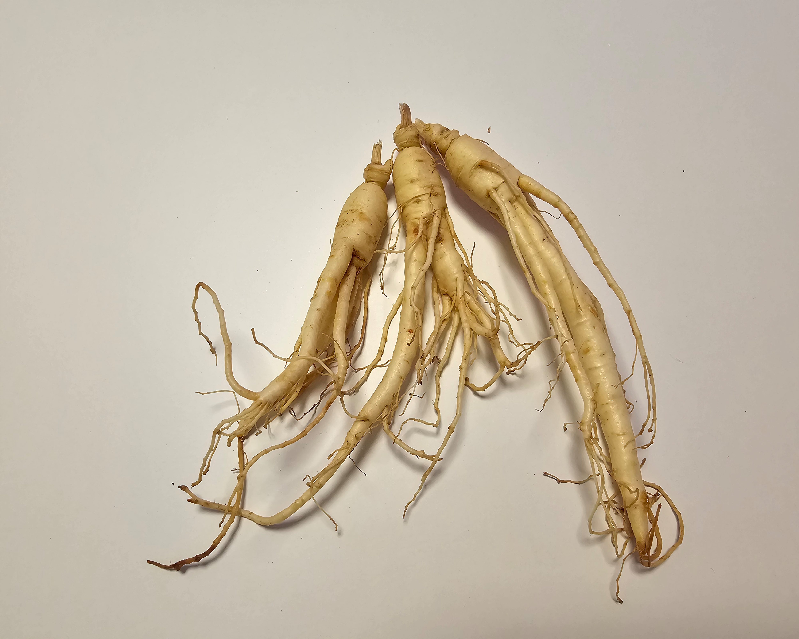

SEEDLING LINE
육묘 단계부터
균일하게.
인삼 · 비트 · 아스파라거스 · 더덕 · 셀러리 · 우엉 · 스테비아 묘를 작물별 환경 기준과 함께 연결합니다.
PHYSICAL AUTOMATION FOR NURSERY WORK
센서와 시간 제어를 결합해 관수·가습·환기 환경을 자동으로 관리하는 24V 저전력 육묘 시스템.
PRODUCTS
묘를 구매해 바로 재배를 시작하거나, 작물별 환경에 맞춘 자동화 기기를 도입할 수 있습니다.

SEEDLING LINE
인삼 · 비트 · 아스파라거스 · 더덕 · 셀러리 · 우엉 · 스테비아 묘를 작물별 환경 기준과 함께 연결합니다.
FLAGSHIP SYSTEM
농가가 반복해서 확인하던 환경을 시스템이 대신 읽고, 설정 조건에 맞춰 필요한 장치를 작동시킵니다.
BUILT FOR FARM WORK
24V DC 기반으로 센서 상태와 설정 시간을 확인해 관수·가습·환기를 운전합니다.
24V DC 기반 제어, 필요한 조건 중심 작동, 농가 규모에 맞춘 구성.
시간 조건과 센서 기준값을 함께 확인하고 조건 충족 시 장치를 자동 실행합니다.
자동 관수, 가습·환기 제어, 작물별 설정값 운용을 하나의 흐름으로 연결합니다.
SEEDSYNC CONTROL
온도·습도·토양·CO₂ 데이터를 읽고, 설정 조건과 비교하고, 필요한 장치를 작동시키는 세 단계 제어 흐름입니다.
FIELD READINESS
복잡한 스마트팜 전체를 바꾸는 대신, 육묘 단계에서 실제로 필요한 기능부터 적용합니다.
작물과 육묘 조건에 따라 온도·습도·토양·관수 기준값과 운전 조건을 설정합니다.
설정된 시간과 실제 환경값을 함께 확인한 뒤 장치를 작동시킵니다.
반복적으로 확인해야 하는 관리 작업을 자동화해 수동 관리 간극을 줄입니다.
도입 상담부터 설치, 초기 세팅, 사용 중 운영 지원과 출장 A/S까지 연결합니다.
FIELD VALIDATION
아직 확보하지 않은 성과 수치는 공개하지 않습니다. MVP와 농가 테스트에서 동일한 항목을 반복 측정해 실제 결과를 쌓습니다.
발아·활착, 환경 편차, 관리 시간, 사용 전력의 측정 기준을 고정합니다.
동일 조건에서 반복 운전하고 시간대별 센서·장치 데이터를 기록합니다.
지역과 작물별 조건 차이를 비교하고 설정값을 보정합니다.
실증값이 확보된 이후에만 Before / After 결과로 공개합니다.
01 / SEEDLING LINE
02 / EQUIPMENT LINE
FIELD NETWORK
가상의 고객 후기 대신 테스트 농가·지역별 실증·현장 인터뷰를 하나씩 축적해 공개합니다.
실제 재배 환경에서 Seed Optima Bed의 운전 데이터를 기록할 농가를 모집합니다.
기온과 습도 조건이 다른 지역에서 동일 제어 로직의 작동을 비교합니다.
작물별 설정값과 생육 결과를 같은 형식으로 누적해 비교 가능한 데이터로 만듭니다.
SUPPORT
상담 이후에도 설치·초기 운전·운영 지원이 끊기지 않도록 연결합니다.
작물과 재배 규모, 현재 관리 방식과 설치 공간을 확인합니다.
필요 센서와 장치를 정하고 시간 조건과 기준값을 현장에 맞게 설정합니다.
초기 운전 데이터를 확인하고 설정값과 작동 순서를 조정합니다.
사용 중 발생하는 장치 문제와 유지관리 과정을 지원합니다.
BUILD LOG
뉴스를 억지로 채우는 대신 실제 진행 상황만 짧게 기록합니다.
팜모닝 반응과 상담 데이터를 확인하기 위한 공개 버전을 준비합니다.
센서·릴레이·관수·가습·환기 작동을 순서대로 검증합니다.
지역과 작물에 따른 운전 조건과 시장 반응을 비교합니다.
GET STARTED
묘 구매, Seed Optima Bed 도입, 테스트 농가 참여까지 필요한 경로를 선택해 상담할 수 있습니다.